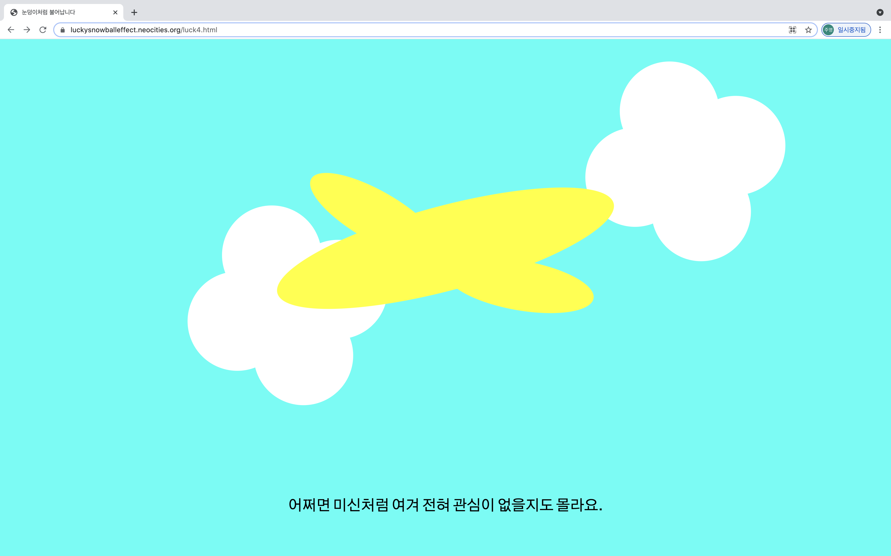

눈덩이처럼
불어납니다

luckysnowballeffect.neocities.org
(pc로 접속해주세요)
행운에 대한 단상을 담은 웹사이트. 네잎클로버를 좋아하는 마음에서 시작되었다.
"당신은 행운을 그저 막연하게만 느낄지도, 남들에게만 일어나는 일이라 여길지도 모릅니다. 눈에 잘 띄지 않는 것이라 생각할 수도 있고, 어쩌면 미신처럼 여겨 전혀 관심이 없을지도 몰라요.
하지만 지금 당신의 주머니를 뒤져보세요. 행운은 이미 그곳에 와 있답니다."